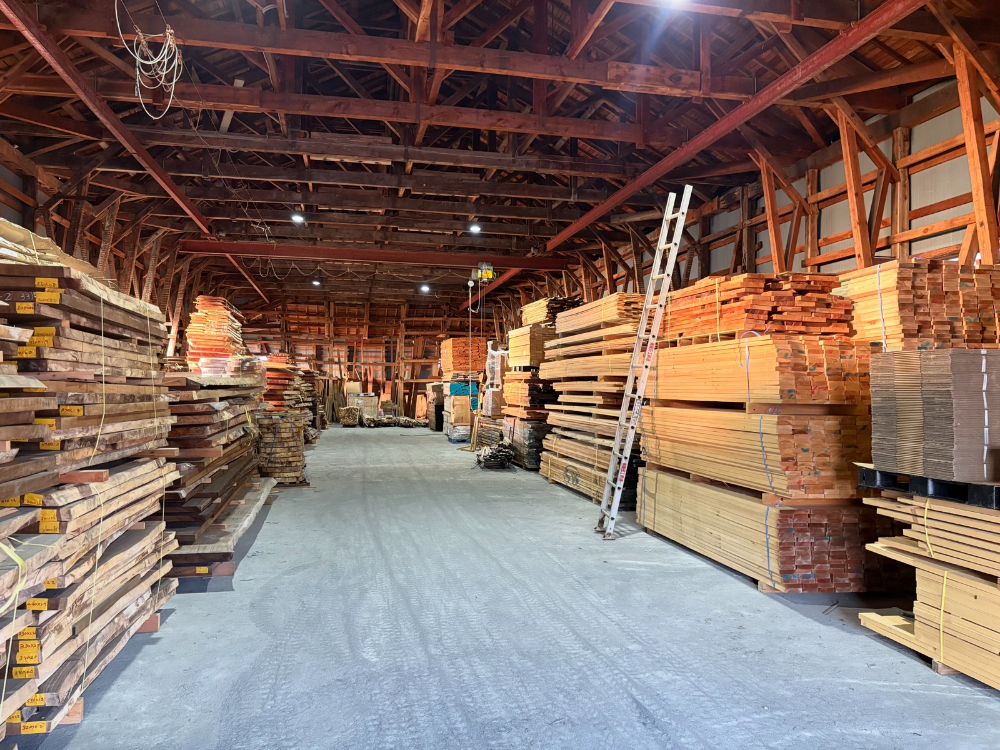
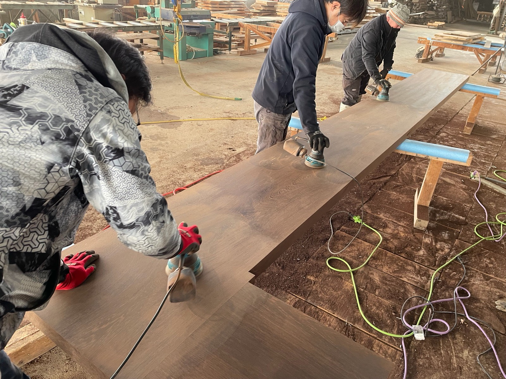
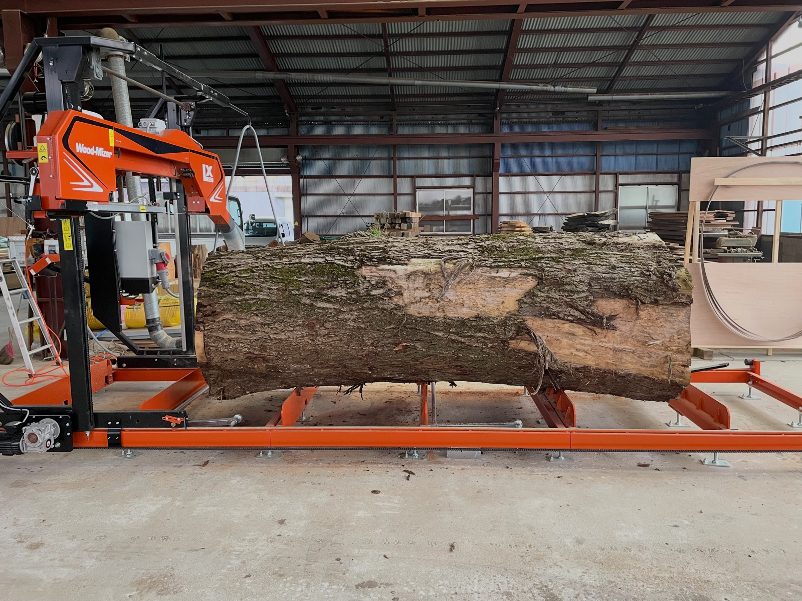
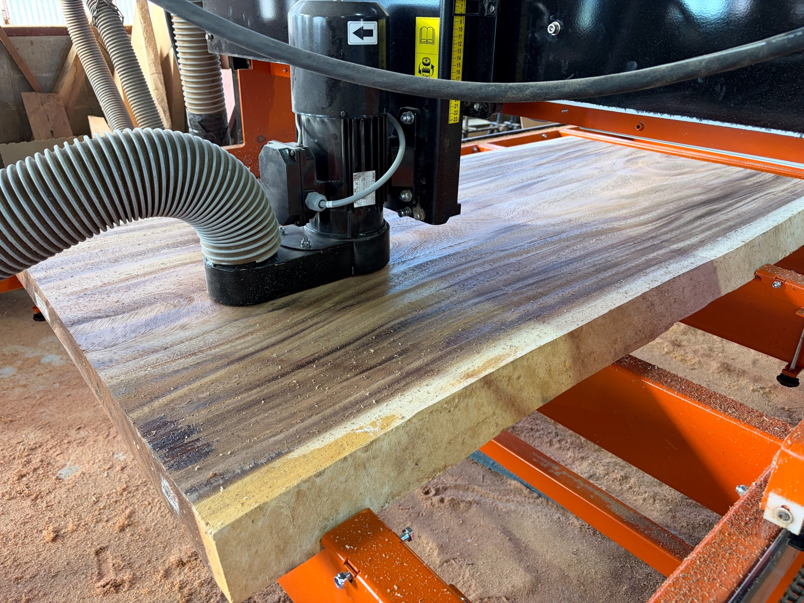
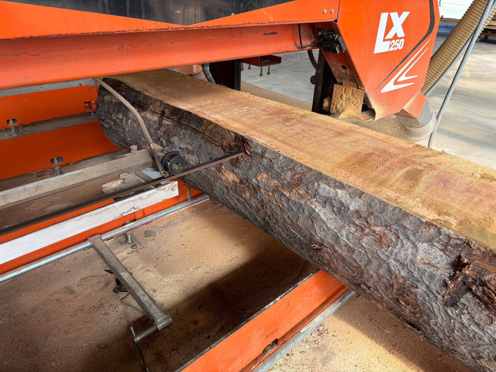
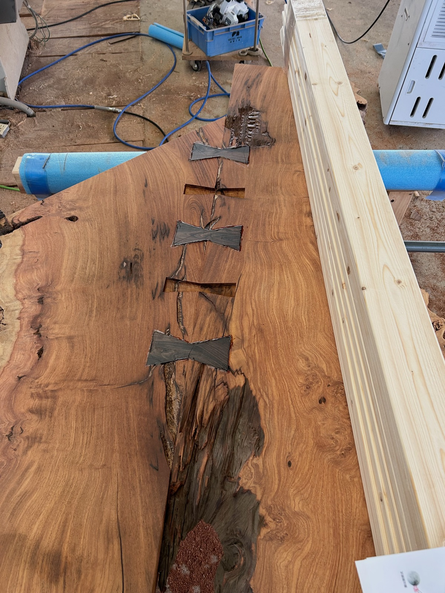
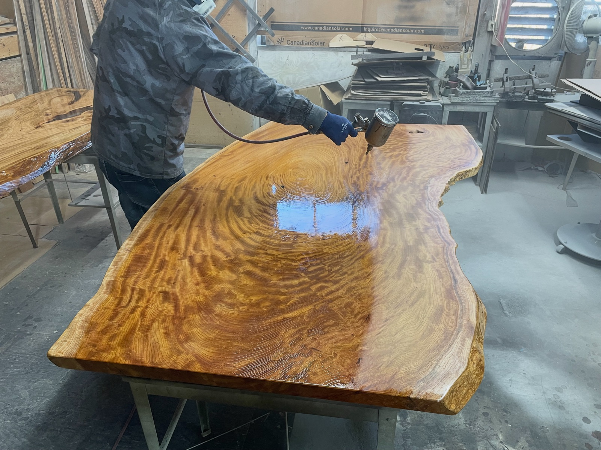
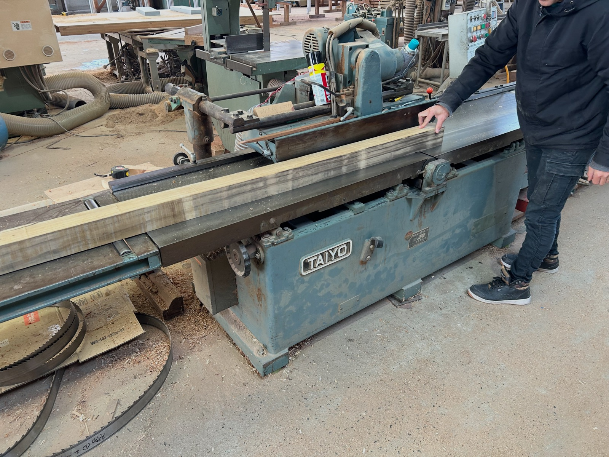
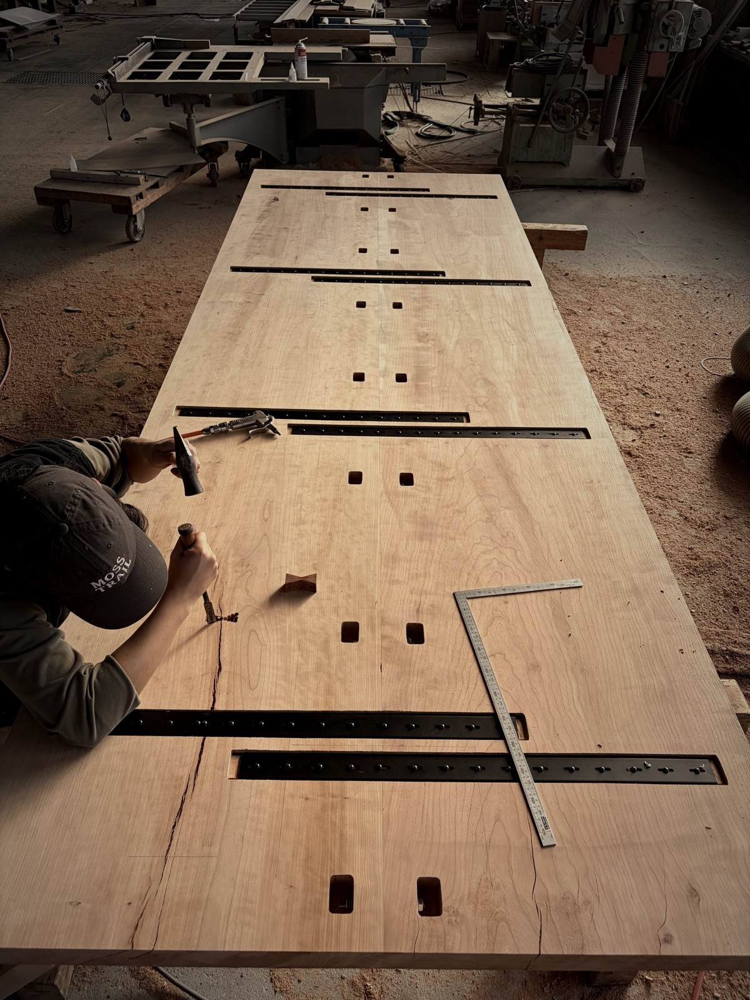

FACTORY
工場・設備
丸太、古材、半製品。どんな状態の木材が持ち込まれても製品にできるように、製材から仕上げ・塗装までの設備と職人を、丹後の工場に揃えています。

SPACE
大きな木を、大きなまま扱える場所。
都市部の工房では難しい、大きな材料の保管・並べての一斉加工・長尺ものの取り回し。広い工場があるから、10mクラスのカウンターのような大物も自社で加工できます。
自社のキャパシティを超える量産品は、提携工場と連携して対応します。



ONE STOP
ふつうは分業される工程を、
ふつうは分業される工程を、
ほぼ一社で。
工程ごとに会社が変わらないから、意図が途中で途切れません。調整の手間と時間も少なくなります。木材の乾燥だけは、専用の乾燥設備を持つ協力会社にお願いしています。乾燥を終えた木材は自社の倉庫で保管し、必要なときにすぐ加工へ回せます。
- 01仕入れ
- 02製材
- 03乾燥・保管乾燥は協力会社
- 04加工
- 05塗装
- 06納品



一枚板、切り株、角材を中心に、さまざまな木材を取り揃えております。
EQUIPMENT
主な設備
大型木材の加工に必要な設備は、ほぼすべて自社で保有しています。加工工程のみのご依頼も承ります。

| 製材 | Wood-Mizer 製材機（LX250） 直径1,380mm×長さ7,200mmまで製材可能 |
|---|---|
| 平面出し | SlabMizer（大きな一枚板の平面出し） 幅1,400mm、長さ10mクラスまで加工可能 |
| 切削・成形 | NC加工機、モルダー、木工旋盤、各種木工機械 |
| 接合・補修 | 幅はぎ加工、継手仕口加工、ちぎり加工、穴埋め、レジン加工 |
| 塗装 | オイル塗装、ウレタン塗装 |
| 名入れ | レーザー加工（ロゴ・名入れ） UVプリントも対応可能（協力会社） |

PEOPLE
30〜40代の職人が、
30〜40代の職人が、
現場の中心。
職人の高齢化が進む業界の中で、KUKU の加工を担うのは30〜40代のメンバーです。大きく重い木を扱う体力とスピード、そしてこの先何十年も続けていける技術の継承を大切にしています。
LUMBERYARD
木の生命力を、
木の生命力を、
体感できる場所。
平成31年にオープンした木材展示場。一枚板や切り株、角材のストックを、実物で見て触れて選べます。工場見学とあわせて、打ち合わせの場としてもご利用ください。
- 見学
- 予約制（メールまたはお電話で）
- 場所
- 京都府京丹後市弥栄町黒部3120 事務所横倉庫
- 予約
- 0772-65-2211 ／ info@kukulife.jp
COMPANY
会社概要
KUKU（クク）は、木々を表す古い言葉です。昭和15年の創業から木造建築に携わってきた福田工務店が、木材加工の仕事をこの名前で届けています。
- 屋号
- KUKU
- 会社名
- 株式会社福田工務店
- 創業
- 昭和15年（1940年）
- 設立
- 昭和40年（1965年）2月19日
- 所在地
- 〒627-0142 京都府京丹後市弥栄町黒部3120
- 電話
- 0772-65-2211
- 営業時間
- 月〜土 9:00〜17:00（土曜は第1・第3のみ営業）
- 事業内容
- 一枚板・木材の加工販売／製材加工製品の製作、製材の請負／内外装の造作材加工販売／木工品の企画・製作（OEM・名入れ）／建築工事